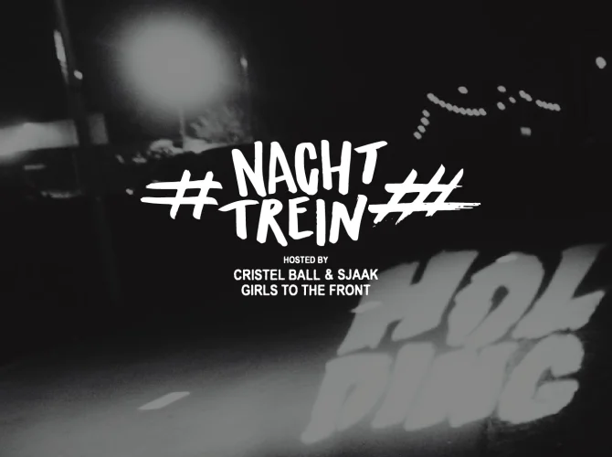

Raging punk beats ‘til sunrise
Using festival bio due to a lack of publicly available data
In HOLDING, all signals are set to punk, even at night. Night Train is the raging dance express heading toward sunrise, making stops at every station from punk to happy hardcore. All weekend long, Girls to the Front, Sjaak, and Cristel Ball hold the keys to the most unholy house at Down The Rabbit Hole. Each night, they invite different DJs and artists to take the decks, keeping you moving without delay until 4 a.m. with hard-hitting floor-killers and ball-bangers. All aboard! **About the hosts:** The Utrecht-based initiative Girls to the Front is steadily building a thriving FLINTA* community in the Dutch punk scene with interdisciplinary events and kick-ass punk compilations. Their ideal: a world where everyone can mosh freely without worrying about dick energy, big or small. Experience how liberating that can be on Friday during the dedicated Girls to the Front edition of the brand-new night program, Nachtdienst. On Saturday and Sunday, dive into the night with Sjaak and Cristel Ball. DJ, curator, and jewelry designer Cristel, along with DJ, artist, and programmer Sjaak, are staples of the Amsterdam music and art scene. With this versatile duo, expect two nights full of surprises, including bands behind the decks, unique performances, and DJs spinning their favorite late-night tracks. During Night Train, ride with these conductors toward the break of dawn: **Friday – hosted by Girls to the Front** 23:00 – 00:00 Girls to the Front (DJ set) | @girls.2thefront 00:00 – 01:00 Bandgurl666 | @bandgurl666 01:00 – 02:30 Queer In Wonderland | @queerinwonderland 02:30 – 04:00 Plug & Play | @plugandplay_ams **Saturday – hosted by Cristel Ball & Sjaak** 23:00 – 00:30 DJ Sjaak | @bootlegsjaak 00:30 – 02:00 Cristel Ball | @cristelball 02:00 – 03:00 Camy Huot | @camyhuot 03:00 – 04:00 KABOUTERTJE PUTLUCHT (DJ set) | @kaboutertje_putlucht Performance: Angel Spiders | @angelspiderss **Sunday – hosted by Cristel Ball & Sjaak** 23:00 – 00:00 Cristel Ball & DJ Sjaak | @cristelball & @bootlegsjaak 00:00 – 01:00 SHARP SHIN (DJ) & DRUM SONG (DJ) | @nushinnaini & @anxietyandre 01:00 – 02:00 Fokkers | @hondenfokker 02:00 – 03:00 DJ Rocco | @roccojgh 03:00 – 04:00 Cristel Ball & DJ Sjaak | @cristelball & @bootlegsjaak Performance: Angel Spiders | @angelspiderss
Friday, July 03
23:00 - 04:00
HOLDING